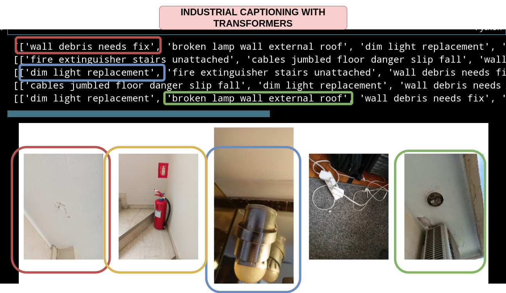

[Captioning potential hazards in industrial environments using Transformer models]
This is a project made with the help of
Athena Research Center
that were generous enough to provide me with a dataset, as well as
the necessary resources to finetune the CLIP multimodal
model and further process the image captions to suggest potential solutions
for the detected hazards.

[Pipeline]
- First we train the vision and text transformer models and attempt to retrieve relevant captions. In a sense this is a classification problem since we actually return the probabilities of the captions to function as appropriate descriptions of an image.
- Then we process the captions and use the Llama model to attempt to detect the hazards in the captions and suggest potential solutions.
For more information you can visit the corresponding repo in github where you can see how to run the evaluation suite on the given sample dataset. You can run it using python or a container or if you don't really care that much you can take a look at the notebook, which showcases how retrieval works as well as how generating potential solutions for hazards is handled.